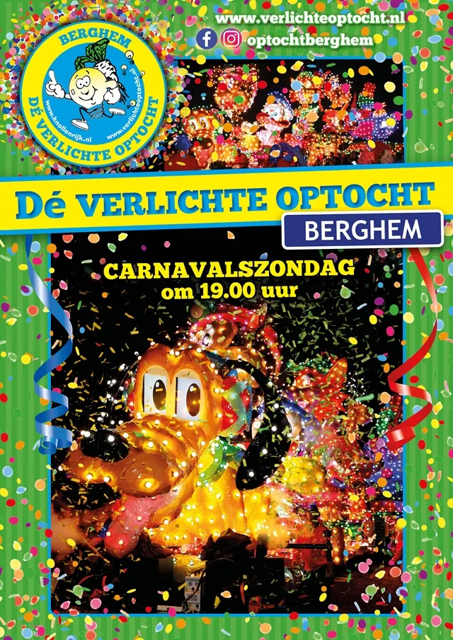
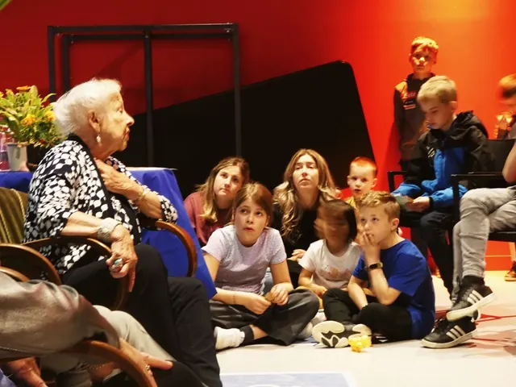
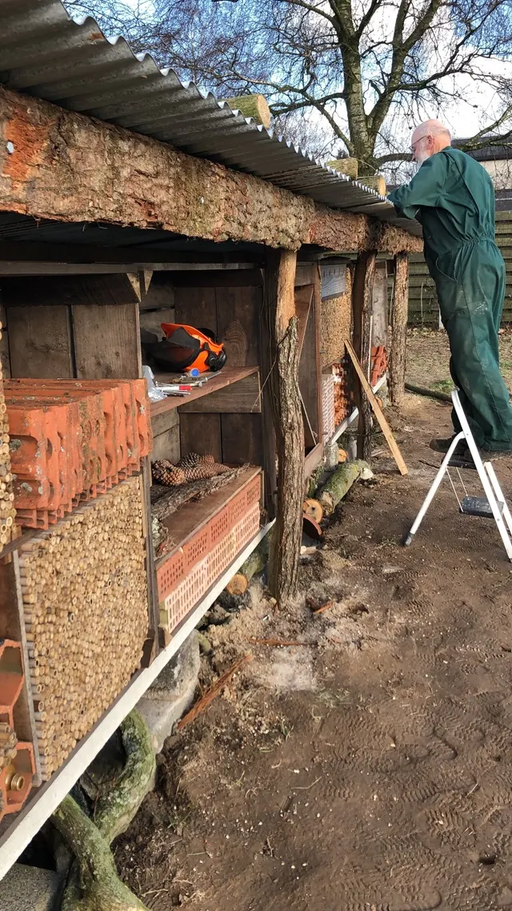

26 augustus 2024Ernie Bossmann sluit periode als Stadstekenaar Nijmegen af met expositie in Valkhof Museum
20 februari 2024James Oesi en Djuwa Mroivili brengen een unieke mix van klassieke muziek naar De Vereeniging in Nijmegen
5 februari 2024Sterker Ouderenwerk: Een Nieuwe Naam en Locatie voor Toonaangevend Ouderenwerk in Nijmegenregio Arnhem-Nijmegen
2 februari 2024Elektriciteitsnetwerk op slot; dit zorgt voor problemen voor de economie in de regio Arnhem-Nijmegen
1 februari 2024Nijmegen Klinkt @ Stevenskerk: Een Podium voor Lokaal Talent in de Historische Zuiderkapel
1 februari 2024Een Spectaculair Lichtfestijn in het Hart van het Knollenrijk - Verlichte Carnavalsoptocht Berghem 2024
31 januari 2024Helen Dowling Instituut Nijmegen Verhuist naar Ruimere Locatie voor Uitgebreidere Zorg
30 januari 2024Ontdek een Wereld van Verhalen bij het Vrijheidsmuseum deze Voorjaarsvakantie
24 januari 2024Stichting Vrouwenrechtswinkel Nijmegen - Gratis juridisch advies voor vrouwen, door vrouwen
18 januari 2024Eerste Inclusieve Uitgaansfeest door De Special Social Club en Lindenberg Cultuurhuis in Nijmegen
15 januari 2024Landgoed Buitengewoon zoekt Enthousiaste Vrijwilligers voor Nieuwe Biodiversiteitswerkgroep
11 januari 2024Speciale Tentoonstelling Ter Ere van Beeldhouwer Oscar Goedhart in Ateliermuseum Jac Maris
10 januari 2024Ontdek de Magie van Modern Circustheater tijdens het Nationaal Theaterweekend in de Lindenberg
9 januari 2024Stichting Kunst in het Kerkje presenteert een Uniek Bach Concert met Celliste Ella van Poucke